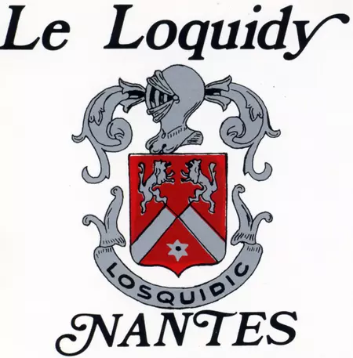
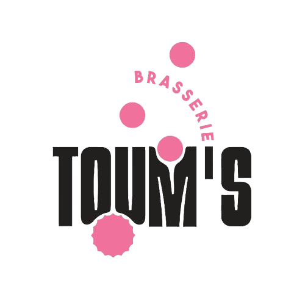

17 octobre 2026 — Une journée historique pour tous les Loquidiens

« Après avoir fait 6 ans de brassage amateur, j’ai passé le pas en mai 2021 et j’ai lancé la brasserie toum’s. Mon goût prononcé pour les cocktails m’a fait me spécialiser dans les bières aux fruits et aux épices. Un goût de fruits et/ou d’épices toujours prononcé mais jamais sucré. Je fait également quelques bières classiques et je suis en mesure également de créer des bières sur mesure pour des événements spéciaux. C’est pour cette raison, et en tant qu’ancien élève du loquidy, que ce projet des 100 ans m’a emballé. »
Jérôme – Brasserie Toum’s (Thouaré-sur-Loire)
Merci de vous référer à la carte ci-dessous qui recense :
👉 Itinéraire recommandé :
• Se garer au Parking des Universités
• Prendre le tram ligne 2 à Facultés
• Descendre à l'arrêt Michelet Sciences
Chers Alumni, chers amis du Loquidy,
2026 sera une année exceptionnelle : notre école soufflera ses 100 bougies ! Le 17 octobre prochain, nous nous retrouverons pour célébrer un siècle d’histoire, de souvenirs et d’amitiés.
Vous avez une idée ? Un projet ?
Écrivez-nous à loquidyalumni@gmail.com. Chaque suggestion compte.
Votre soutien financier permettra de créer des animations, préserver la mémoire du Loquidy et offrir un cadre chaleureux à tous.
IBAN : FR76 1027 8361 8600 0100 6840 202
BIC : CMCIFR2A
Le Comité des 100 ans
Chers anciens élèves, professeurs et personnels,
Le Loquidy fêtera ses 100 ans en 2026 ! Le samedi 17 octobre sera une journée exceptionnelle de retrouvailles, d’émotions et de souvenirs partagés.
Déjà près de 1000 personnes préinscrites pour recevoir les informations.
Des activités sportives, artistiques et culturelles pour tous, dans l’esprit convivial du Loquidy.
Contact sport : daussy.frederique@gmail.com
Contact organisation : loquidyalumni@gmail.com
Le Comité des 100 ans du Loquidy vous souhaite un joyeux Noël 2025.
C’est parti pour les 100 ans du Loquidy !
Vous êtes déjà plus de 500 anciens élèves, professeurs et personnels à avoir répondu au questionnaire des Alumni. Et il n’est pas trop tard pour mobiliser d’autres Loquidiens : nous comptons sur vos talents communicatifs !
Plus il y a de monde à une fête, plus elle est joyeuse et réussie.
Oui, 2026. Pas d’erreur possible : le prochain samedi 17 octobre après cela sera… en 2037 !
Un établissement qui accueillait 75 élèves sur le site du Loquidy en octobre 1926… et plus de 2200 élèves un siècle plus tard. Comment ne pas raconter et partager cette belle aventure ?
Un livret historique sera publié pour le grand jour !
Vous aurez le plaisir de revoir ces lieux où vous avez grandi, mais aussi de découvrir les nombreuses évolutions et nouveaux projets.
Avec les Alumni, le comité des 100 ans — composé d’anciens élèves, professeurs et personnels — travaille activement pour vous accueillir le 17 octobre 2026 à Saint-Joseph du Loquidy – La Salle.
C’est parti pour retrouver vos amis et camarades de classe !
AGENDA → samedi 17 octobre 2026
DIFFUSION → “SAVE THE DATE” et lien du questionnaire
👉 Accéder au questionnaire Alumni
Les inscriptions officielles aux festivités seront diffusées début 2026.
À très vite, vivement 2026 pour se retrouver.
Le Comité des 100 ans